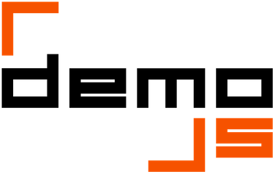

DEMOJS 2013 - JS pride!
We are back!
After last year success (100+ sceners coming, 27 prods), we are thrilled to invite you the new release of DemoJS team : DEMOJS 2013 - JS Pride.
Check out our invitro (Also on Pouet)
Highlights of the week-end
- live stream
- starts friday June 28th @ 8PM CEST
- ends sunday June 30th @ noon CEST
- hosted by Isart DIGITAL, the videogame and 3D movie school
- FREE as a beer could be :)
- 3 main compos (1K, 8K, Demo) + 3D gfx fast compo + special prizes
- Remote entries are welcome
- 200+ squared meters
- Conferences with major demoscene/web players
- Concerts
- Friendly atmosphere
- And more…
(re)Introduction
Demoscene? Demoparty?
The demoscene is a computer art subculture that specializes in producing demos, which are audio-visual presentations that run in real-time on a computer. Demosceners are coders, graphic artists, computer musicians… More infos on wikipedia
A demoparty is an event that gathers demosceners and other computer enthusiasts to socialize and compete. You can find more about demoparties on wikipedia
Indeed, competitions, or "compos", are the main feature of a demoparty : the productions made by the demosceners are shown on the bigscreen, then the public vote to rank them.
An important rule in all the demoscene competitions is that the production must be new, ie the production should not have been previously released or publicly shown. Also, it's important to understand that you don't need to wait for the demoparty to start your production. The demoparty just acts as a deadline.
We strongly recommend to take part in at least one competition. Having YOUR production showed on the bigscreen in front of a relevant audience is awesome, and will fulfill your party experience.
DemoJS?
DemoJS demoparty is a demoparty specialized in web technologies.
We welcome both experienced demosceners and people who have never been to a demoparty.
Our aim is to bring together the best of the two worlds (demoscene & javascript) to make a great event.
If you are a beginner in web technologies, here are some links to help you. Also, you will find help at the party place, don't hesitate to ask people around you!
DemoJS 2013 has 3 competitions: 1K, 8k, and demo. You don't need to be physically present at DemoJS to compete (of course, if you can, we strongly recommend to actually BE at the partyplace). All the details about the DemoJS competitions are on the compos & rules page
What to bring to a demoparty?
- your computer
- an ethernet cable
- a sleeping bag (if you plan to sleep at the partyplace)
- your creativity!
Schedule
Highlights of the party
All times are given in local time CEST. This program is subject to change (but not that much).
Friday, June 28th 2013
- 8:00PM : doors open, sceners install their stuff and start coding
- 9:00PM : Party kickoff!
- 9:20PM : Sketchfab fast compo theme revealed!
- 9:30PM : Ninterido concert!
Ninterido is a music project mainly oriented towards Chipmusic, demoscene and electronic. Check him out on Soundcloud
- 10:45PM : Get inspired! A selection of demos by Wullon and @cb
Saturday, June 29th 2013
- 2:00PM : Tech talks
- 2:15PM : Syncing your demo is rocket science by Mog
There are a couple of ways to sync your demo to the music, some are more tedious than others - and of course the results differ. Let me show you what you could use to sync your demo, and how Rocket is the best tool for the job if you have 4k to spare
- 3:00PM : Matraka : lessons learnt in 4 weeks and 1k by @P01
- 3:55PM : Digital Artisanry: Passion between Lines of Code by @romancortes
- 4:40PM : ACME javascript demo generator by @ehouais
- 5:25PM : La renaissance de la demoscene (talk in french) by JeFfR3y/VitalMotion and Hello/Sector One
Dans toutes les productions industrielles, un produit fonctionne par cycle avec des hausses et des baisses d'activités.
Christophe Villeneuve (aka Hello du groupe Sector One) et Jean-François Richard (aka JeFfR3y du groupe VitalMotion et du site de mix AmigaVibes) montreront que cette approche est appliquée pour la demoscene sans que l'on s'en aperçoive et cela depuis le BOOM de l'informatique dans les années 80, jusqu'à nos jours. Cette conférence aura aussi un aspect plus uchronique en essayant de dessiner les contours d'une vision futuriste de la demoscene.
- 6:10PM : Talks end
- 7:00PM : Deadline for demos submission
- 8:00PM : Moonove concert!
moonove is a french musical single man project started in 2001 mainly focused on IDM and Ambient music. Previously known as 'djam/eko' and part of the early Atari ST/Falon demoscene. Thereafter he made music for several groups like Nomad, Bomb, Scoopex... Also involved in video games music on Atari, PC and Playstation (Kaan, Moongames, H20...) He also been part of Sunlikamelo-d, French collective and launched (with his pal Knos/Tpolm) Noerror.org a demoscene music news website. Get more information on www.moonove.com
- 10:00PM : Compos presentation
Sunday, June 30th 2013
- 11AM : Competitions results
- noon : The party ends
Tech talks and concerts
The complete program for the tech talks and concerts will announced soon.
Tools of the trade
1k || 8k
Packers
- JsExe recommended : demo-oriented JavaScript compressor (windows command line tool)
- Windowspane : demo-oriented JavaScript compressor (ruby)
- CrunchMe : demo-oriented JavaScript compressor (windows & unix commandline tool)
Music in a few bytes
- Sonant JS recommended : demo-oriented JS synth + sequencer
- SoundBox lite : evolution of Sonant Js
Frameworks
- fakeplasticcubes : a 9K demoscene intro in Javascript (and framework for future 4-64K intros)
All compos
Frameworks
- Three.js recommended : webGL framework
- CODEF : Canvas Oldschool Demo Effect Framework
- Processing.js : port of the Processing Visualization Language
- TinyC5 : HTML 5 framebuffer graphics library
- Paper.js :Canvass framework
- Kinetic.js : canvas frameworks
- OSG.js : Webgl framework
- CubicVR
- SpiderGL
- CooperLitch
- GLGE
- scene.js
- Raphaël.js : SVG framework
Tools
- jsRocket recommended : to easily sync your demos!
- ShaderToy : play with shaders + a lot of examples
- GLSL sandbox : Same as above, with different samples
- WebGLU
- WebGL trace
- WebGL utils
- WebGL unproject
Documentation and tutorials
General
- Mozilla Developper Network recommended : for everything else
- Dive into HTML5 - canvas
Small prod
Webgl / 3D
Canvas
- Canvas tutorial @ MDN
- Optimizing canvas french :some advices to optimize canvas performance
JS demo examples
- DemoJS 2012 productions
- DemoJS 2011 productions
- JS1k : the original JS 1K intro competition
- WebGL ports of classics
- Pouet.net : all JS prodz
- WAB :Canvas ports of some old schoold demos
- Old school never dies : Oldschool Never Dies by Jace / ST Knights: a demo which use Tiny C5 library
How to meet musicians and graphic artists?
If you are a lonely coder looking for a soundtrack or some graphics for a demo/intro, you can probably find a demoscener willing to collaborate with you. Here are some hints on where to look for people :
- Demoscene.fr petites annonces (in french)
- Pouet.net BBS : create a new topic with an explicit title (eg: "Looking for a musician for DemoJS", "Looking for a demo soundtrack"), and ignore the trolls
- Revision on IRC
Need more help?
- Demoscene.fr (in french)
- Pouet.net BBS
- DemoJS team : feel free to drop us an email
Also, don't forget, DemoJS is a friendly place with friendly people where you can find help; don't hesitate to ask people around you!
Come to DemoJS - Paris, France
At Isart Digital : near Opéra Bastille
View this map on Google Map website
Transportations from Paris and nearby
The nearest metro station is Bastille. This is by far the easiest way to come to the party place. You can use the following metro lines to come : 1 5 8
You can also use the bus. Each one of those stops close by Bastille : 86 76 65 29 20 69 87
We do not recommend coming using a car because the neighbourhood is very busy and it is very hard to find some parking (Isart Digital doesn't provide any space to park).
Are you coming from outside of France?
We can help you to plan your travel! Just email us: contact@demojs.org
Sleeping at the party place
You can sleep at the party place, both the friday night and the saturday night but nothing will be provided like bed or mattress.
Still lost?
You can reach us by email, and - in case of emergency - by phone (+33 6 61 53 88 71).
Rules
General rules
- Native browser web technologies only, like WebGL or Canvas. No plug-ins (e.g Flash or Silverlight), no extras.
- The production should not have been publicly released previously.
- The production has to work on at least one major web browser : Firefox or Chrome or IE. Your demo must run in any of them, without a problem. You are allowed to experiment with the nightly builds, but please keep us informed.
- You should only submit your own work. In particular, it is forbidden to submit copyrighted material.
- The organizing team may disqualify inappropriate entries (pornography, illegal content...).
- The organizing team may disqualify entries that don’t follow the rules expressed here. If you have any questions regarding one of those rules, you can email us : rules@demojs.org.
- You CAN start working on your production NOW. The production does NOT need to be made 100% at the party place.
- Deadline is saturday june 29th @ 7PM CEST
- The visitors of the party will vote and chose the winners for each compo.
Compo machine
- Technical description : Intel i5-2500k / 8GB RAM / GeForce GTX 560 Ti 1go / SSD / 1680x1050
- We will not install any add-ons on the compo machine.
- Entries will be run from a local file, not over HTTP - browser options for local file access will be enabled where necessary (e.g. --allow-file-access-from-files on Chrome).
How to submit your work?
General
You can submit your entry at the party place or by email for remote entries : remote@demojs.org.
You will have to specify the following informations :
- list of used technologies (e.g. WebGL, Canvas, Audio API, etc.)
- best browser to run the demo, and list of known compatible browsers (with, if possible, minimum required version)
- recommended screen resolution for running the demo, if any
Remote specific informations
You can enter the competitions even if you won't be present at the party.
Send us your(s) production(s) by email : remote@demojs.org
Please include in your email :
- the production title
- author/group name
- (optionnal) a message about your production, that will be read to the live audience (of course, you can send us an audio or video recording if you wish!)
Compos
Browser 1k
Play with a few bytes !
- Everything needs to fit in one or more files.
- Total size must not exceed 1k, including HTML, JavaScript and all resources required to run the intro.
- Note that 1k means 1024 bytes or less. We’re not counting in characters, but in bytes (beware of unicode).
- The production have to work offline.
- You are NOT allowed to retrieve content from the Internet
- You should not use any operating system provided media files such as the "Media" and "Music Samples" directory
- You can use built-in generic fonts such as serif, sans-serif.
- No shim is provided.
- Total size must not exceed size limit.
Browser 8k
Try to put cool visuals and music in 8k !
- Same rules as in 1k category except the size allowed here 8k wich is 8192 bytes.
Browser demo
THE compo
- No maximum filesize. However don’t try to run a movie in an iframe.
- Must be a non-interactive.
- You can retrieve external content from the Internet, but it is at your own risk. We shall not be liable for connection problems during demo projection.
3D gfx fast compo
This is a special compo in partnership with SketchFab Sketchfab is a web service to publish and embed interactive 3D models on any web page, and display them in real-time without a plugin. Sketchfab natively supports 27 3D formats and is integrated with major 3D software platforms, allowing users to publish 3D models from their working tools to the web in 1 click.
We will announce a theme on friday evening, and you will have 24 hours to create a 3D model and compete in this compo.
To submit your entry, upload your model on sketchfab.com by 2013/06/29 at 19:00 CET with the tag demojs.
Winners will get SketchFab licenses and gooodies.
Special awards
A DemoJS’s panel will give special awards to compos chosen based on the following criteria :
- The most browser-compatible demo : The whole world does not use last version of Chrome, and compatibility between browsers remains a key issue of web development. Also we prefer well-coded generic demos that behave equal in all browsers, than demos which works nice because of browser specific hacks.
- The most original demo : Unusual browser technologies and original concepts will be appreciated.
Prizes
We have some bounties from our sponsors to offer to the winners:
But most importantly, you will obtain PRIDE of winning a recognized challenge in the JS and demoscene communities!
Questions?
If you have any question about the rules, drop us an email: contact@demojs.org.
About DemoJS
Team
DemoJS is brought to you by french demosceners and JS coders from the Paris.js community :
- bobylito @bobylito
- cb / Adinpsz @cboccato
- JeFfR3y / Vital Motion @amigavibes
- latortue / Punk Floyd @pinkarcadia
- maracuja / ZUUL @__maracuja__
- TiteiKo / Popsy Team @Titeiko
- wullon / Adinpsz @gatuingt
Greetings
Mad props to :
- made / Bomb!, for the DemoJS logo
Contact us
- by email : contact@demojs.org
- on Facebook : Event Page & Fan page
- on Twitter : @demojs & #demojs